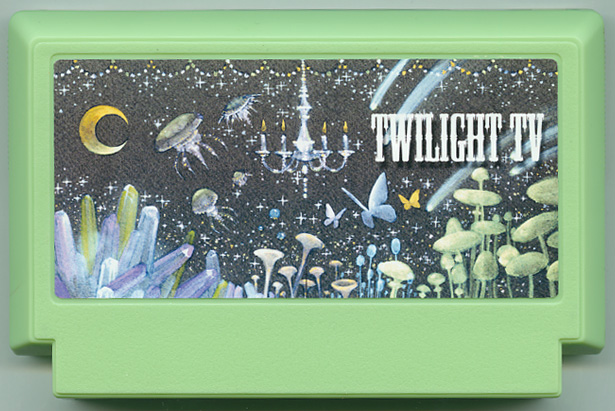

" Twilight TV "
長谷川俊介 / 会社員
見てないけど、つけておきたい。そんな時はテレビを照明器具に仲間入りさせましょう。 ホタルやクラゲ、ツキヨダケ等あらゆる発光生物や、炎、月明かり、星空、世界十大夜景などバラエティーに富んだ光のシチュエーションを収録。発光パターンや揺らぎ、トーンを解析し、好みの組み合わせをビットアートで再現します。サブ照明に。
＊タイマー機能付き
＊照明効果をよりUPさせる別売りアタッチメントも好評発売中。